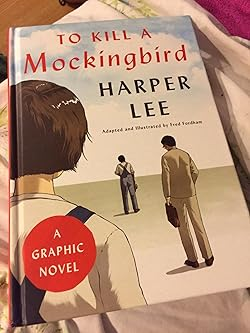
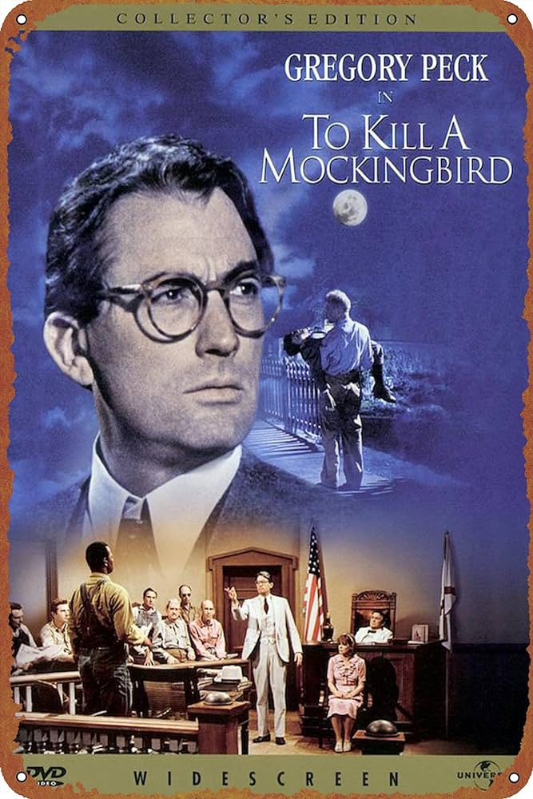

Overview
"To Kill a Mockingbird" is a novel by Harper Lee published in 1960. It was immediately successful, winning the Pulitzer Prize, and has become a classic of modern American literature. The plot and characters are loosely based on Lee's observations of her family, her neighbors, and an event that occurred near her hometown of Monroeville, Alabama, in 1936, when she was 10 years old.
Characters
- Atticus Finch: The father of Scout and Jem, a lawyer, and an upstanding man of integrity.
- Scout Finch: The narrator and protagonist of the story, a young girl.
- Jem Finch: Scout’s older brother.
- Boo Radley: A reclusive neighbor.
- Tom Robinson: A black man accused of raping a white woman.
Gallery

